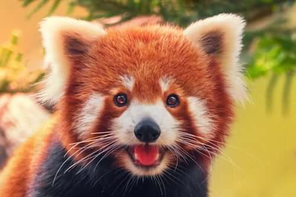

Opis:
Pandka ruda jest najbardziej aktywna w nocy lub tuż po świcie. Zwierzątko to większość swojego życia spędza na drzewach, po których pomaga mu się poruszać chwytny ogon i wyjątkowo ostre pazury. Ze względu na to, że przednie łapy ustawione są pod kątem do wewnątrz, po ziemi zwierzak porusza się nieco kaczkowatym chodem lub kłusem. Naturalnymi wrogami pand są przede wszystkim duże górskie koty, takie jak lamparty. W razie zagrożenia te małe i sprytne zwierzaki uciekają na drzewo i uderzają pazurami w twarde pieńki drewna. Pandy są bardzo czystymi zwierzętami, które podobnie jak koty dokładnie myją swoje futerko. Pyszczek jest czyszczony za pomocą polizanych wcześniej łapek. Komunikacja wewnątrzgatunkowa jest bardzo bogata. Chociaż pandki małe prowadzą raczej samotniczy tryb życia, to w momencie spotkania z innymi osobnikami komunikują się z nimi za pomocą bardzo zróżnicowanego systemu znaków.
Ciekawostki:
Pandka ma częściowo wysuwalne pazury, co ułatwia jej wspinaczkę.
Pandka ruda zamieszkuje dziuple lub nory w korzeniach drzew na stromych skalnych zboczach